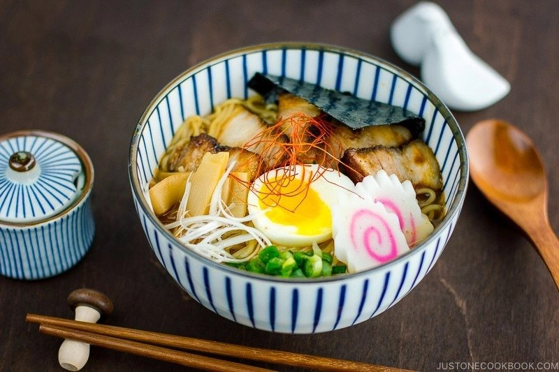

Spicy Shoyu Ramen

Description
Easy homemade spicy shoyu ramen recipe. Top with soft-boiled egg, fish cake, nori and fall-apart tender chashu, this delicious bowl of spicy delight will sure satisfy your ramen craving!
Ingredients
Soup
Each ramen bowl requires about 1 ½ cup (355 ml) of broth + more for evaporation
- 1 Tbsp roasted sesame oil
- 2 cloves garlic (minced)
- 1 knob ginger (1:m 2.5 cm; minced)
- 2 tsp doubanjiang (spicy chili bean sauce/broad bean paste)
- 2 cups chicken stock/broth
- 2 cups dashi
- 2 ½ Tbsp soy sauce
- ½ Tbsp sake
- 1 tsp kosher or sea salt (use half for table salt)
- 1 tsp sugar
Toppings
- 2 servings fresh ramen noodles
- 4 slices homemade chashu
- 1 soft-boiled egg
- 4 slices narutomaki (fish cakes)
- 2 Tbsp Menma (fermented bamboo shoots)
- 1 green onion/scallion (chopped)
- ½ sheet nori (seaweed) (cut in half)
- shiraga negi
- white pepper powder
- Korean Chili Thread (optional garnish)
- la-yu (Japanese chili oil) (optional for more spice)
Steps
To Prepare Toppings
- Prepare ramen toppings ahead of time so you can serve ramen hot immediately. Here are some topping examples; I usually put Chashu, Ramen Egg, blanched bean sprout (or Spicy Bean Sprouts), corn kernels, Shiraga Negi, chopped green onion, and a sheet of nori. Prepare a small dish of red pickled ginger, la-yu (chili oil), and white pepper powder on the table.
Prepare Soup Broth
- In a large pot, heat sesame oil over medium heat. Add garlic and ginger and sauté until fragrant.
- Add Doubanjiang (spicy chili bean paste) and stir for 15 seconds.
- Add the rest of the soup ingredients (chicken soup, dashi, soy sauce, sake, salt, and sugar) and bring it to a boil. Once boiling, reduce heat and simmer for a few minutes.
- Check the flavor. It should be a little salty. This step is an option, but if you prefer clear soup, you can strain the soup through a cheesecloth and put the soup back into the pot.
- Keep the soup simmering (not boiling) until you are ready to serve.
To Cook Noodles
- Bring a large pot of un-salted water to a boil (ramen noodles already include salt in the dough). When water is boiling, take some hot water into serving bowls to warm up the bowls (and drain before adding cooked noodles). Loosen up the fresh noodles.
- Loosen up the noodles before putting them into the boiling water. Cook noodles according to the package instructions. My personal recommendation is to reduce the cooking time by 30-60 seconds than what is on the package label as noodles will continue to cook in the hot soup broth. When noodles are done cooking, drain completely.
Assemble
- Put the noodles in a serving bowl. Pour the soup into the bowl and place your toppings. Serve immediately.
To Store
- You can keep the leftover soup and toppings separately in airtight containers and store in the refrigerator for up to 3 days. Cook the noodles right before serving.
Source: Just One Cookbook